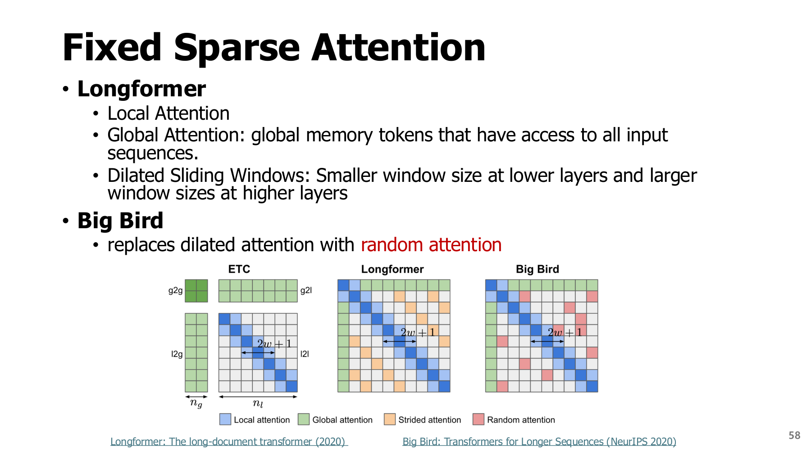
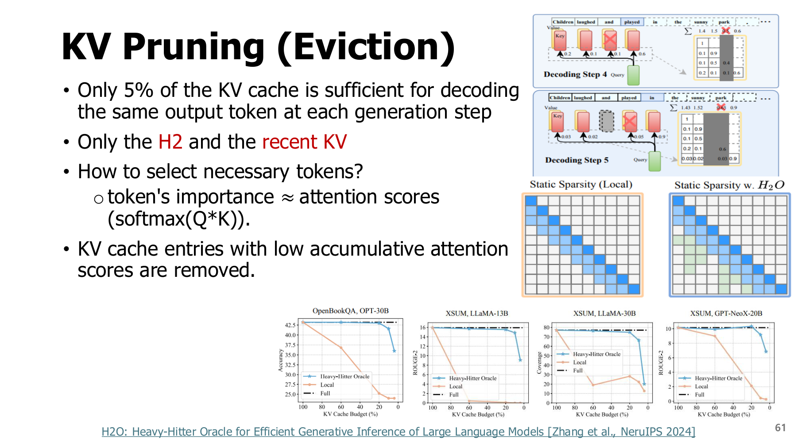
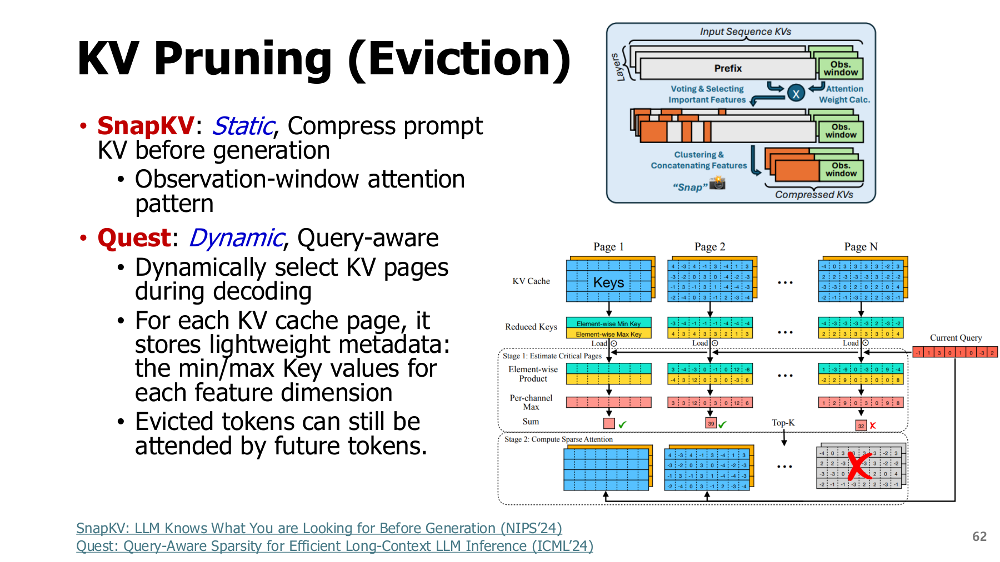
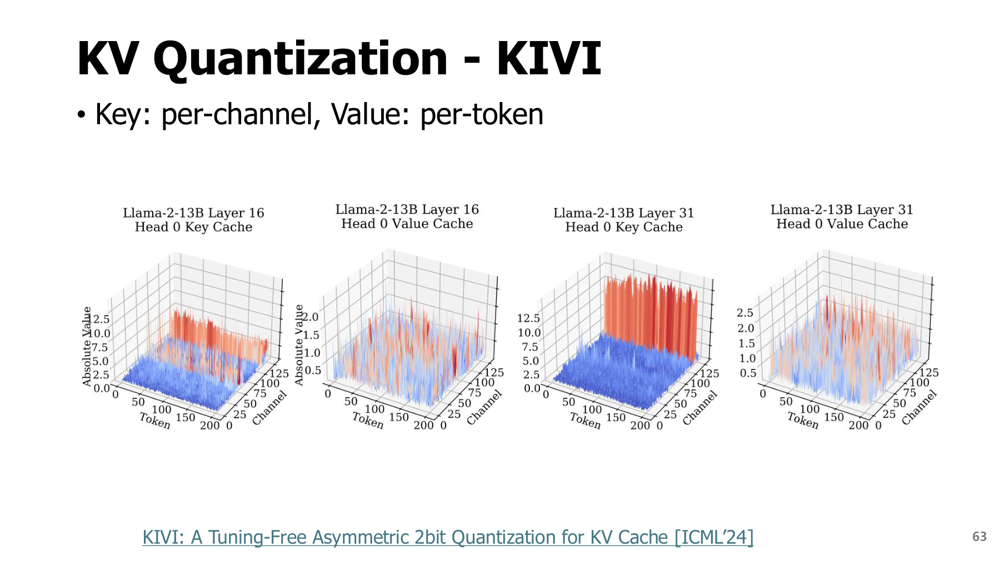
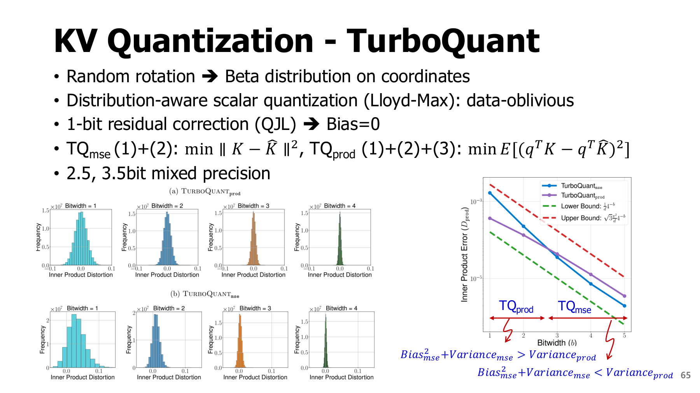
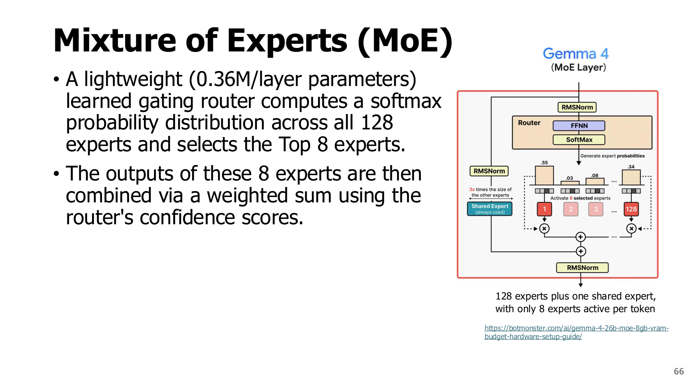

5. Attention·KV·MoE: 어떤 계산과 데이터를 줄일까?
학습 안내 · 이전 · 다음: 투기적 디코딩
원본 범위: p.57-66
학습 목표
- Attention 연결 축소, KV 삭제·읽기 선택·양자화 구분하기
- KV 값 본체의 메모리 용량 계산하기
- MoE의 총 가중치와 현재 계산에 사용하는 가중치 구분하기
시작 전 준비: Attention을 말로 이해하기
문장 속 한 위치를 해석할 때 다른 위치의 정보를 얼마나 참고할지 정하는 계산이 attention이다.
| 구성 | 역할 | 검색에 비유하면 |
|---|---|---|
| Query(Q) | 현재 위치가 찾는 정보 | 검색 질문 |
| Key(K) | 각 위치가 가진 정보의 비교용 표현 | 검색 색인 |
| Value(V) | 선택 비중에 따라 가져올 실제 표현 | 검색 결과의 내용 |
- Q와 각 K의 내적으로 관련성 점수를 구한다.
- Softmax로 점수를 합이 1인 가중치로 바꾼다.
- 그 가중치로 V를 곱해 더한다.
교육용 작은 예제: 두 위치의 attention 가중치가 [0.75,0.25], value가 [10,2]라면 출력은 0.75×10+0.25×2=8이다.
실제 K·V는 학습된 벡터이며 검색 시스템의 문자 색인과 같지는 않다.
5.1 서로 다른 비용을 분리해서 보기 - p.57
위 절차를 수식으로 쓰면
- $d_k$: Q와 K 벡터의 성분 수. 점수 크기를 조절하는 데 사용한다.
- $K^T$: K의 행과 열을 바꾼 전치 행렬.
- O: attention 출력.
- Causal mask: 다음 토큰을 예측할 때 미래 토큰을 미리 보지 못하게 막는 조건.
Prefill·decode·KV cache
| 단계·구성 | 역할 |
|---|---|
| Prefill | 입력 prompt의 여러 토큰을 처리하는 초기 단계 |
| Decode | 이미 생성한 앞부분을 바탕으로 새 토큰을 이어 만드는 단계 |
| KV cache | 과거 토큰의 K·V를 저장해 매번 다시 계산하지 않도록 하는 공간 |
문맥이 길어질수록 cache에 보관하고 읽어야 할 값이 늘어난다. 이 장은 가중치 외의 계산·데이터 비용을 다룬다. 원문 p.57은 여러 최적화 방향의 개요다.
| 수단 | 줄이거나 선택하는 것 | 모델 동작 변화 |
|---|---|---|
| 고정 희소 attention | 허용 query-key 연결 | dense attention과 다른 패턴 |
| 동적 token/head/차원 선택 | 입력별 사용할 계산 | 입력에 따라 근사 오차 발생 가능 |
| KV 퇴거·읽기 선택 | 보존할 KV 또는 현재 읽을 KV | 중요한 과거 정보를 놓칠 수 있음 |
| KV 양자화 | KV 값의 비트 수 | 수치 근사·복원 비용 |
| MoE | token별 활성 expert | 학습된 routing 구조, 총 파라미터는 별도 |
5.2 고정 패턴과 동적 희소성 - p.58-60
고정 패턴: 미리 정한 위치만 참조하기 — p.58
| 패턴 | 뜻 |
|---|---|
| Local/sliding window | 가까운 위치만 참조 |
| Global | 지정된 일부 위치가 넓은 문맥과 연결 |
| Dilated | 간격을 두고 떨어진 위치까지 참조 |
| Random | 무작위로 고른 추가 위치에 연결 |
- Longformer: local·global 연결과 dilated window 등의 구성.
- BigBird: local·global·random 연결의 결합. random 연결만 쓰는 것은 아니다.


그림 읽기
- 격자의 행·열: 토큰 위치. 색칠한 칸: 허용한 query-key 연결.
- 대각선 주변 띠: 가까운 위치를 참조하는 local 패턴.
- 길게 이어진 행·열: global 위치와 연결.
- 띄엄띄엄한 칸: dilated 또는 random 연결. 범례로 구분한다.
- 질문: 모든 칸을 계산할 때와 비교해 어떤 관계를 생략하는가?
길이 L, 고정 local 폭 w의 연결 수는 대략 $O(Lw)$다. 이는 규모가 커질 때 비용이 늘어나는 정도를 뜻하며 global 등 추가 연결 비용은 별도다. 이미 학습한 dense 모델에 마스크만 적용해도 품질이 유지된다고 가정하지 않는다.
동적 패턴: 입력에 따라 참조 대상을 고르기 — p.59-60
동적 희소성(Dynamic Sparsity)은 고정된 연결을 항상 지우는 대신 현재 입력의 문맥에 따라 계산할 부분을 고르는 방식이다. 같은 모델에서도 입력이 바뀌면 필요한 토큰·헤드·내부 차원이 달라질 수 있다.
| 방법 | 무엇을 기준으로 고르는가? | 추가 비용·위험 |
|---|---|---|
| SpAtten | 누적 attention 중요도로 토큰·head를 단계적으로 제거 | 초기에 낮은 중요도가 이후에도 낮으리라는 보장 없음 |
| Deja Vu | 작은 예측기로 필요한 MLP 내부 차원·attention head 추정 | 예측기 실행, 오판정, 희소 커널 비용 |
Head: 서로 다른 관점의 attention 계산 갈래. MLP: attention과 별도로 특징을 변환하는 다층 신경망 블록.
SpAtten: 토큰과 헤드는 무엇이 다를까? — p.59
- 토큰 가지치기(Token Pruning): 여러 질의가 특정 토큰을 얼마나 참조했는지 누적한 어텐션 중요도로, 이후 단계에서 덜 필요한 토큰을 골라낸다. 입력 문장을 사용자가 직접 지우는 전처리와는 다르다.
- 헤드 가지치기(Head Pruning): 어텐션의 여러 계산 갈래 중 기여가 낮은 헤드를 생략한다. 하나의 헤드는 여러 토큰 관계를 계산하므로, 토큰 하나를 생략하는 것과 제거 단위가 다르다.
- 단계적 제거(Cascade Pruning): 층을 진행하면서 중요도를 보고 토큰·헤드를 줄인다. 앞에서 제거한 정보가 뒤에서 필요해질 가능성까지 품질 평가로 확인해야 한다.
교안 p.59의 예시는 처음 11개 토큰·12개 헤드에서 더 적은 토큰·헤드로 진행되는 흐름이다. 계산량 감소 수치는 그 예시 조건이며 모든 입력의 결과는 아니다. SpAtten 연구진 발표 자료는 이 선택을 실제로 활용하는 하드웨어 설계도 함께 다룬다.
Deja Vu: 희소성 예측기(Sparsity Predictor)와 선행 예측(Look-ahead) — p.60
본 연산을 전부 계산한 뒤 필요 없는 부분을 찾으면 이미 비용을 지불한 셈이다. Deja Vu는 어떤 어텐션 헤드와 다층 퍼셉트론(MLP, Multi-Layer Perceptron)의 내부 차원을 사용할지 작은 예측기로 먼저 추정한다. 이 예측기는 별도의 학습이 필요하며, 다음 토큰 자체를 제안하는 6장의 초안 모델과는 예측 대상이 다르다.
Deja Vu의 실행 아이디어
- 현재 계산보다 앞서 확보된 은닉 표현으로 다음 하위 블록에서 쓸 부분을 미리 예측한다. 예를 들어 어텐션에 들어가는 표현으로 뒤의 MLP를, MLP에 들어가는 표현으로 다음 층의 어텐션을 예측한다.
- 본 계산을 진행하는 동안 예측을 비동기적으로 겹쳐 실행하여, 예측이 끝나기를 따로 기다리는 비용을 줄인다.
- 필요한 부분만 읽어 희소 커널로 실행한다. 문맥에 따른 선택이므로 다음 입력에서는 다른 부분이 선택될 수 있다.
왜 미리 예측할 수 있을까? 인접한 층의 표현이 비교적 천천히 변한다는 관찰을 활용한다. 미래의 정답 토큰을 미리 아는 것이 아니라, 가까운 앞 단계의 표현에서 다음 계산에 필요한 부분을 추정하는 것이다. 예측 오차와 예측기·희소 커널의 추가 비용이 줄어든 계산량보다 작아야 실제로 빨라진다. Deja Vu 원 논문.
구분: 고정 가중치를 영구 제거하는 것과 입력마다 실행할 부분을 고르는 것은 다르다.
5.3 KV 퇴거와 현재 query의 읽기 선택 - p.61-62
키·값 가지치기(KV Pruning, Key–Value Pruning)에서 퇴거(Eviction)는 저장한 캐시 항목을 제거하는 것이다. 가중치를 지우는 것이 아니라 과거 토큰에서 계산한 K·V 활성값을 보관할지 정한다.
p.61의 H₂(Heavy Hitters, 중요 참조 토큰)는 누적 어텐션이 큰 토큰들을 뜻하고, H₂O(Heavy-Hitter Oracle)는 이 관찰을 활용한 캐시 정책 이름이다. “H2 and the Recent KV”는 자주 참조되는 과거 토큰 + 최근 토큰을 함께 남긴다는 뜻이다. 과거의 핵심 정보와 방금 이어진 문맥을 함께 유지하려는 것이다. 예를 들어 대화 초반의 중요한 이름은 오래되었어도 남기고, 직전 문장의 토큰은 아직 중요도가 충분히 쌓이지 않았어도 최근성 예산으로 보호할 수 있다. 두 기준이 겹치는 항목을 중복 저장하는 뜻은 아니다. H₂O 원 논문.


그림에서는 attention이 특정 열에 집중하는 모습과 최근 위치가 참조되는 모습을 본다. 원문 주의: “5% KV로 같은 token을 생성”은 원문의 실험·관찰 맥락이다. 모든 요청·모델·길이에서 95%를 없애도 같은 응답이라는 보장이 아니다. 정확한 생성 분포 보존을 보장하는 알고리즘으로 해석하면 안 된다.
| 방법 | 판단 시점·정보 | 무엇을 줄이는가? | 다시 참조할 수 있는가? |
|---|---|---|---|
| H2O | 생성 중 누적 중요도와 최근성 | 보존 KV 예산 | 실제 버린 항목은 별도 복원 없이는 불가 |
| SnapKV | prompt 관찰 window의 attention | 생성 전 prompt KV 선택·압축 | 선택 제외분 보존 여부는 구현 설계에 달림 |
| Quest | 현재 query와 page별 key min/max | 해당 단계에서 읽을 KV page | 원 KV를 유지하므로 다음 query가 선택 가능 |
SnapKV의 정적(Static) 선택: 프롬프트 끝의 관찰 구간에서 어떤 위치를 주로 보는지 모으고, 생성 전에 보존할 프롬프트 KV를 헤드별로 선택·압축한다. 여기서 정적이라는 말은 프롬프트 선택을 매 디코드 질의마다 새로 하지 않는다는 뜻이다. 모든 입력에 같은 토큰을 남긴다는 뜻도, 생성 중 새 KV가 추가되지 않는다는 뜻도 아니다. SnapKV 원 논문.
Quest의 동적(Dynamic) 선택: 매 디코드 단계의 현재 질의(Query)와 페이지별 키(Key) 최솟값·최댓값 메타데이터를 이용해 중요한 페이지를 추정하고, 선택한 페이지의 K·V를 읽는다. 원래 캐시는 유지하므로 이번에 읽지 않은 페이지도 나중의 질의가 선택할 수 있다. 아래 그림의 위쪽은 무엇을 보존할지, 아래쪽은 지금 무엇을 읽을지를 결정한다고 비교하면 차이가 분명해진다.


그림 읽기
- 위 SnapKV: prompt를 관찰하고 생성 전에 보존할 KV를 선택하는 흐름.
- 아래 Quest: 현재 query마다 읽을 page를 다시 고르는 흐름.
- Page: 여러 토큰의 KV를 묶어 관리하는 단위.
- 비교 질문: “이번에 읽지 않은 page”와 “저장 공간에서 없앤 page”는 어떻게 다른가?
정정·주의: p.62는 Quest를 eviction 절에 놓고 “evicted token을 나중에 볼 수 있다”고 적는다. 여기서는 영구 삭제와 이번 단계에서 읽지 않음을 구별한다. Quest 논문은 query와 page별 key 최솟값·최댓값을 사용해 중요한 page를 선택하는 방법이다. 즉 원본 cache 저장량 감소와 읽기 대역폭 감소는 같은 목표가 아니다(대조일 2026-11-10).
교육용 선택 예제: 단일 query에서 page A·B·C의 중요도 추정이 [0.8,0.1,0.6]이고 읽기 예산이 2 page라면 A·C를 읽는다. 다음 query에서 [0.1,0.9,0.2]가 되면 B·C를 읽을 수 있어야 한다. B를 영구 삭제한 정책과는 다르다. 점수 추정이 완벽하지 않으면 실제 중요한 page를 놓칠 수 있다.
5.4 KIVI: K와 V의 묶는 축을 다르게 - p.63
KIVI의 질문: K와 V를 같은 방향으로 묶어 양자화해도 될까?
| 대상 | 관찰한 특징 | 통계를 공유하는 축 |
|---|---|---|
| Key | 특정 채널에 큰 값이 몰리는 경향 | Per-channel: 같은 채널의 여러 토큰 |
| Value | 토큰별 값 분포의 차이 | Per-token: 같은 토큰의 여러 채널 |
양자화 복습: 여러 실수 값을 소수의 대표값으로 표현하고, scale·zero point 등의 정보로 복원한다. 큰 이상값과 작은 값을 같은 범위로 묶으면 작은 값의 표현 오차가 커질 수 있다.


그림 읽기와 저장 비용
[token,channel]배열에서 K는 채널을 고정하고 토큰 방향을 본다.- V는 토큰을 고정하고 채널 방향을 본다.
- 원문 key의 특정 채널에 큰 값이 모이는 모양과 value의 토큰별 변화를 비교한다.
실제 저장에는 그룹별 scale·zero point, 최근 토큰을 높은 정밀도로 남기는 residual buffer 등도 필요하다. 모든 KV가 정확히 2 bit/value만 차지하는 것은 아니다. 세부 조건은 KIVI 논문을 참고한다.
5.5 TurboQuant: 회전, scalar quantization, 내적 오차 - p.64-65
원리: 값의 편중을 완화한 뒤 양자화하기
- 무작위 직교 회전: 벡터 길이는 보존하면서 특정 좌표에 몰린 큰 값을 분산한다.
- 좌표별 양자화: 회전 후 분포에 맞춘 대표값으로 각 좌표를 표현한다.
- 선택적 잔차 보정: 내적 오차를 줄이려는 변형에서는 양자화 후 남은 차이도 보정한다.
| 용어 | 의미 |
|---|---|
| Vector | 숫자를 한 줄로 모은 것 |
| Scalar quantization | 각 좌표의 숫자를 대표값으로 바꾸는 양자화 |
| Codebook | 사용할 대표값 목록 |
| Data-oblivious | 특정 데이터셋의 calibration으로 codebook을 학습하지 않음 |
Data-oblivious는 입력을 보지 않는다는 뜻이 아니다. 벡터 norm 등의 부가 정보도 따로 필요하다.


그림은 먼저 위의 단계 1·2·3을 읽고, 아래 그래프에서 MSE 최소화와 내적 오차 최소화가 서로 다른 목표임을 확인한다.
- $TQ_{mse}$: 원본 K와 복원 $\widehat K$ 사이 $\|K-\widehat K\|_2^2$를 줄이는 쪽에 초점을 둔다.
- $TQ_{prod}$: 잔차에 1-bit QJL(Quantized Johnson-Lindenstrauss) 보정을 추가해 query와의 내적 추정 bias를 제어한다. 목표는 $E[(q^TK-\widehat{q^TK})^2]$ 같은 내적 오차다.
주의: “Bias=0”은 이론의 무작위 추정기·가정 아래 기대값에 대한 성질이다. 개별 query의 오차가 0이거나 softmax와 최종 응답까지 무손실이라는 뜻이 아니다. 그림에서 어느 변형이 더 낮은 오차를 보이는지도 bit 예산·실험 조건에 따라 다르다. 원문의 2.5·3.5 bit는 혼합 정밀도 예시이며 metadata를 포함한 모든 실행 메모리가 그 비율로 감소하지는 않는다. TurboQuant 원 논문으로 핵심 단계와 목표의 차이를 대조했다(2026-11-10).
5.6 KV 용량을 계산하고 대상 고르기
계산식에 넣을 값
| 기호 | 뜻 |
|---|---|
| $N_L$ | KV를 저장하는 층 수 |
| B | 한 번에 처리하는 입력 수 |
| L | 저장하는 문맥의 토큰 길이 |
| $H_{KV}$ | KV head 수 |
| $d_h$ | head 한 개의 벡터 차원 |
| b | 값 하나를 저장하는 byte 수 |
K와 V 값 본체의 용량은 다음과 같다.
식 읽기: 토큰 하나의 KV 크기에 길이·batch·층 수를 곱한다. 앞의 2는 K와 V를 각각 센 것이다.
GQA·MQA처럼 여러 query head가 KV를 공유하는 구조에서는 query head 수가 아닌 KV head 수를 사용한다.
교육용 계산
조건: 32층, B=1, L=4096, KV head 8개, head 차원 128, FP16(2 byte).
MiB는 $2^{20}$ byte다.
| 변경 조건 | 값 본체 | 바꾸는 것 |
|---|---|---|
| 원래 FP16 | 512 MiB | 기준 |
| 길이는 유지, 4 bit로 변경 | 128 MiB | 값의 정밀도 |
| FP16 유지, 길이를 1024로 축소 | 128 MiB | 보존하는 문맥 |
| 두 변경 결합 | 32 MiB | 문맥과 정밀도 |
같은 용량도 같은 정보는 아니다. 문맥 제거와 값의 수치 근사는 품질에 미치는 영향이 다르다. Metadata·residual·padding·임시 공간·복원 비용을 제외한 계산이다.
5.7 MoE: 총 파라미터와 활성 파라미터 - p.66
Mixture of Experts(MoE)는 여러 expert(보통 FFN) 중 router가 token별로 일부를 선택하고, 출력을 routing 가중치로 합치는 구조다. 개념적으로 $y=\sum_{e\in TopK(x)}a_e(x)f_e(x)$다. $f_e$는 expert 함수, $a_e$는 선택된 expert의 혼합 비중이다. normalization·shared expert의 사용은 구조마다 다르다.


그림 읽기
- Router: 입력 토큰에 사용할 경로를 선택하는 모듈.
- Expert: 선택 가능한 하위 신경망. 보통 FFN(특징을 변환하는 전방향 신경망)이다.
- 선택된 expert의 출력은 가중합으로 결합한다.
- 그림의 128개 중 8개 선택과 shared expert는 해당 모델의 예시다.
확인 질문: 이번 토큰이 사용하지 않은 expert도 다음 토큰을 위해 저장할 필요가 있을까?
총 파라미터와 활성 파라미터
| 구분 | 의미 | 주로 관련된 비용 |
|---|---|---|
| 총 파라미터 | 모델이 보유한 전체 가중치 | 저장·적재 |
| 활성 파라미터 | 이번 토큰 계산에 사용한 가중치 | 해당 단계의 계산 |
8/128 expert만 사용한다고 전체 저장량이 1/16이 되는 것은 아니다. 다른 입력은 다른 expert를 선택할 수 있고, attention·공유 부분도 남는다.
실행 비용: 여러 장치에 나눠 둔 expert는 통신과 작업량 불균형을 만들 수 있다. 학습된 router를 쓰는 MoE와 dense 모델을 임의로 잘라 사용하는 것은 다르다.
5.8 요약과 확인 질문
- Quest에서 이번 query가 읽지 않은 page를 다음 query가 다시 선택할 수 있는 이유는?
- 위 KV 예제에서 B만 2로 바꾸면 FP16 본체 용량은?
- KIVI에서 key와 value의 공유 통계 축은 어떻게 다른가?
- TurboQuant의 내적 추정이 unbiased이면 생성 응답도 항상 같은가?
해설과 돌아갈 위치
- 영구 삭제 대신 현재 읽기 집합을 고르는 방식이기 때문이다. 5.3의 저장·읽기 구분을 확인한다.
- 1024 MiB=1 GiB다. B에 비례하며 총 실행 메모리는 더 크다. 5.6으로 돌아간다.
[token,channel]에서 key는 channel을 고정한 token 묶음, value는 token을 고정한 channel 묶음이다. 5.4를 확인한다.- 아니다. 기대 내적과 개별 오차, softmax와 최종 생성은 다르다. 5.5를 확인한다.
다음 장은 KV를 줄이는 대신 큰 모델의 순차 호출을 줄이는 방법을 다룬다.